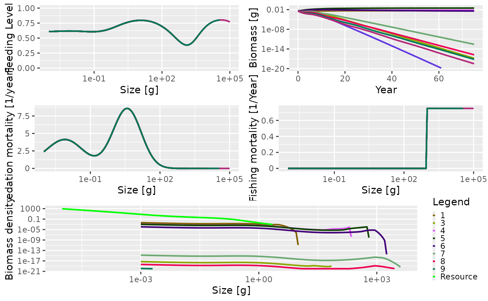
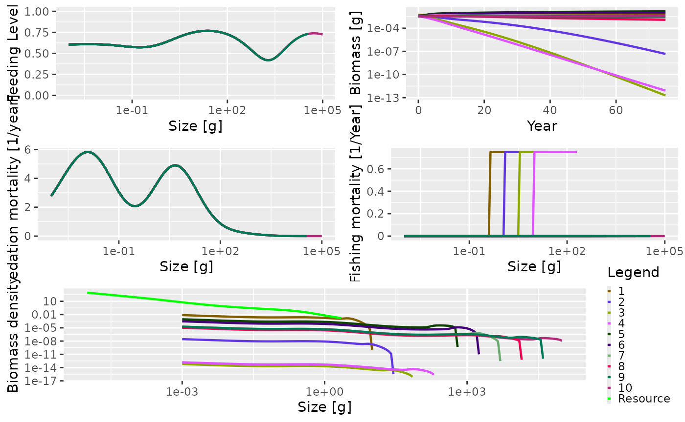

Introduction
The trait-based size spectrum model can be derived as a simplification of the general model outline in the model description section. It is more complicated than a community model and the most significant difference between the two is that while the community model aggregates all species into a single spectrum, the trait-based model resolves many species.
In a trait-based model the asymptotic size is considered to be the most important trait characterizing a species. Most of the species-specific parameters, such as \(\beta\) and \(\sigma\), are the same for all species. Other model parameters are determined by the asymptotic size. For example, the weight at maturation is a fixed fraction of the asymptotic size. The asymptotic sizes of the species are spread evenly on a logarithmic scale. The number of species is not important and does not affect the general dynamics of the model.
Setting up a trait-based model
To help set up a trait-based model, there is a wrapper function, newTraitParams(). Like the newCommunityParams() function described in the section on the community model, this function can take many arguments. Most of them have default values so you don’t need to worry about them for the moment. See the help page for newCommunityParams() for more details.
One of the key differences between the community type model and the trait-based model is that reproduction and egg production are considered. In the community model, reproduction is constant and there is no relationship between the abundance in the community and egg production. In the trait-based model, the egg production is dependent on mature individuals investing part of their energy income into reproduction. The relationship between the energy invested into reproduction and the actual rate of egg production is modelled using a Beverton-Holt type function (the default in mizer, see the section on density-dependence in reproduction) where the reproduction rate \(R_i\) (numbers per time) approaches a maximum as the energy invested increases.
Here we set up the model to have 10 species, with asymptotic sizes ranging from 10 g to 100 kg. All the other parameters have default values.
params <- newTraitParams(no_sp = 10, min_w_inf = 10, max_w_inf = 1e5)
## Note: Using f0, h, lambda, kappa and the predation kernel to calculate gamma.The output reminds the user that \(\gamma\) was not specified, and so will be calculated using other parameters.
This function returns an object of type MizerParams that holds all the model information, including species parameters. This object can therefore be interrogated in the same way as described in the section on the community model.
summary(params)
## An object of class "MizerParams"
## Consumer size spectrum:
## minimum size: 0.001
## maximum size: 1e+05
## no. size bins: 161
## Resource size spectrum:
## minimum size: 1e-10
## maximum size: 2.23872
## no. size bins: 208 (301 size bins in total)
## Species details:
## species w_inf w_mat beta sigma
## 1 1 8.912509e+00 2.511886 100 1.3
## 2 2 2.511886e+01 7.079458 100 1.3
## 3 3 7.079458e+01 19.952623 100 1.3
## 4 4 1.995262e+02 56.234133 100 1.3
## 5 5 5.623413e+02 158.489319 100 1.3
## 6 6 1.584893e+03 446.683592 100 1.3
## 7 7 4.466836e+03 1258.925412 100 1.3
## 8 8 1.258925e+04 3548.133892 100 1.3
## 9 9 3.548134e+04 10000.000000 100 1.3
## 10 10 1.000000e+05 28183.829313 100 1.3
## Fishing gear details:
## Gear Target species
## knife_edge_gear 1 2 3 4 5 6 7 8 9 10The summary shows us that now we have 10 species in the model, with asymptotic sizes ranging from \(8.9125094\) to \(`r max(species_params(params)\)w_inf)`$. The rather strange-looking values for the sizes is due to the fact that the size classes are equally spaced on a logarithmic scale.
The size at maturity (w_mat) is linearly related to the asymptotic size. Each species has the same preferred predator-prey mass ratio parameter values (beta and sigma, see the section on predator/prey mass ratio). There are \(161\) size bins in the community and \(301\) size bins including the resource spectrum. Ignore the summary section on fishing gear for the moment. This is explained later.
Running the trait-based model
As with the community model, we can project the trait-based model through time using the project() function. Here we project the model for 75 years without any fishing (the effort argument is set to 0). We use the default initial population abundances so there is no need to pass in any initial population values (see the section on setting the initial abundances).
sim <- project(params, t_max = 75, effort = 0)
This results in a MizerSim object that contains the abundances of the community and resource spectra through time, as well as the original MizerParams object. As with the community model, we can get a quick overview of the results of the simulation by calling the plot() method:
plot(sim)

The summary plot has the same panels as the one generated by the community model, but here you can see that all the species in the community are plotted. The panels show the situation in the final time step of the simulation, apart from the biomass through time plot. As this is a trait-based model where all species fully interact with each other, the predation mortality and feeding level by size is the same for each species. In this simulation we turned fishing off so the fishing mortality is 0. The size-spectra show the abundances at size to be evenly spaced by log of asymptotic size.
Example of a trophic cascade with the trait-based model
As with the community model, it is possible to use the trait-based model to simulate a trophic cascade. Again, we perform two simulations, one with fishing and one without. We therefore need to consider how fishing gears and selectivity have been set up by the newTraitParams() function.
The default fishing selectivity function is a knife-edge function, which only selects individuals larger than 1000 g. There is also only one fishing gear in operation, and this selects all of the species. You can see this if you call the summary() method on the params argument we set up above. At the bottom of the summary there is a section on Fishing gear details. You can see that there is only one gear, called knife_edge_gear and that it selects species 1 to 10. To control the size at which individuals are selected there is a knife_edge_size argument to the newTraitParams() function. This has a default value of 1000 g.
In mizer it is possible to include more than one fishing gear in the model and for different species to be caught by different gears. We will ignore this for now, but will explore it further below when we introduce an industrial fishery to the trait-based model.
To set up the trait-based model to have fishing we set up the MizerParams object in exactly the same way as we did before but here the knife_edge_size argument is explicitly passed in for clarity:
params_knife <- newTraitParams(no_sp = 10, min_w_inf = 10, max_w_inf = 1e5, knife_edge_size = 1000)
## Note: Using f0, h, lambda, kappa and the predation kernel to calculate gamma.First we perform a simulation without fishing in the same way we did above by setting the effort argument to 0:
sim0 <- project(params_knife, effort = 0, t_max = 75)
Now we simulate with fishing. Here, we use an effort of 0.75. As mentioned in the section on trophic cascades in the community model, the fishing mortality on a species is calculated as the product of effort, catchability and selectivity (see the section on fishing gears for more details). Selectivity ranges between 0 (not selected) and 1 (fully selected). The default value of catchability is 1. Therefore, in this simulation the fishing mortality of a fully selected individual is simply equal to the effort. This effort is constant throughout the duration of the simulation (however, mizer does allow variable effort).
sim1 <- project(params_knife, effort = 0.75, t_max = 75)
Again, we can plot the summary of the fished community using the default plot() function. The knife-edge selectivity at 1000 g can be clearly seen in the fishing mortality panel:
plot(sim1)

The trophic cascade can be explored by comparing the total abundances of all species at size when the community is fished and unfished. As mentioned above, we obtain the abundances with N(sim), which returns a three dimensional array with dimensions time x species x size. Here we have 76 time steps (75 from the simulation plus one which stores the initial population), 10 species and 100 sizes:
## [1] 76 10 161As with the community model, we are interested in the relative total abundances by size in the final time step so we use the finalN() function. This gives us a matrix with one row per species and one column per size bin. We sum in each column to get a vector with the total abundance per size bin:
We can then use these vectors to calculate the relative abundances:
relative_abundance <- total_abund1 / total_abund0
This can be plotted using the commands below:
plot(x = w(params), y = relative_abundance, log = "xy", type = "n", xlab = "Size (g)", ylab = "Relative abundance", ylim = c(0.1, 10)) lines(x = w(params), y = relative_abundance) lines(x = c(min(w(params)), max(w(params))), y = c(1, 1), lty = 2)
The impact of fishing on species larger than 1000 g can be clearly seen. The fishing pressure lowers the abundance of large fish (\(> 1000\) g). This then relieves the predation pressure on their smaller prey (the preferred predator-prey size ratio is given by the \(\beta\) parameter, which is set to 100 by default), leading to an increase in their abundance. This in turn increases the predation mortality on their smaller prey, which reduces their abundance and so on.
This impact can also be seen by looking at the predation mortality by size. The predation mortalities are retrieved using the getPredMort() function. As mentioned above, for the trait based model the predation mortality by size is the same for each species. Therefore we only look at the predation mortality of the first species.
m2_no_fishing <- getPredMort(params, finalN(sim0))[1, ] m2_with_fishing <- getPredMort(params, finalN(sim1))[1, ]
The predation mortalities can then be plotted.
plot(x = w(params), y = m2_with_fishing, log = "x", type = "n", xlab = "Size [g]", ylab = "Predation Mortality [1/year]") lines(x = w(params), y = m2_no_fishing, lty = 2) lines(x = w(params), y = m2_with_fishing)

Predation mortalities from the unfished (dashed line) and fished (solid line) trait-based model.
Setting up an industrial fishing gear
In this section we want to operate an industrial fishery. Industrial fishing targets the small zooplanktivorous species that are typically used for fishmeal production.
In the previous simulations we had only one fishing gear and it targeted all the species in the community. This gear had a knife-edge selectivity that only selected species larger than 1 kg. We can see that when we look at the gear parameters
gear_params(params)
## gear species sel_func knife_edge_size catchability
## 1 knife_edge_gear 1 knife_edge 1000 1
## 2 knife_edge_gear 2 knife_edge 1000 1
## 3 knife_edge_gear 3 knife_edge 1000 1
## 4 knife_edge_gear 4 knife_edge 1000 1
## 5 knife_edge_gear 5 knife_edge 1000 1
## 6 knife_edge_gear 6 knife_edge 1000 1
## 7 knife_edge_gear 7 knife_edge 1000 1
## 8 knife_edge_gear 8 knife_edge 1000 1
## 9 knife_edge_gear 9 knife_edge 1000 1
## 10 knife_edge_gear 10 knife_edge 1000 1We will expand the model to include multiple fishing gears. This requires us to look more closely at how fishing gears are handled in mizer. In mizer it is possible for a fishing gear to catch only a subset of the species in the model. This is useful because when running a simulation with project() you can specify the effort per gear and so you can turn gears on or off as you want. Each gear has a selectivity curve for each species.
We will set up the model to include two fishing gears: an industrial gear that only catches species with an asymptotic size less than or equal to 500g, and a second gear, other, that catches everything else. The position of the knife-edge for both gears will occur at 0.05 x the asymptotic size i.e. the selectivity parameters will be different for each species and will depend on the asymptotic size.
For this we will need to change the gear_params data frame. If we want to keep the original model, we should first make a copy before making modifications.
params_multi_gear <- params
To start with we need to know what the asymptotic sizes of the species in the model are so we can determine the knife-edge positions for each species. These are stored in the w_inf column of the species_params data frame inside the params object. We can then use these asymptotic sizes to set a vector of knife edge sizes that are 0.05 times the asymptotic size:
gear_params(params_multi_gear)$knife_edge_size <- species_params(params)$w_inf * 0.05
Now we want to assign each species to either the industrial or other gear.
no_sp <- 10 gear <- rep("Industrial", no_sp) gear[species_params(params)$w_inf > 500] <- "Other" gear_params(params_multi_gear)$gear <- gear
To check what has just happened let us look at the new gear parameter data frame:
gear_params(params_multi_gear)
## gear species sel_func knife_edge_size catchability
## 1 Industrial 1 knife_edge 0.4456255 1
## 2 Industrial 2 knife_edge 1.2559432 1
## 3 Industrial 3 knife_edge 3.5397289 1
## 4 Industrial 4 knife_edge 9.9763116 1
## 5 Other 5 knife_edge 28.1170663 1
## 6 Other 6 knife_edge 79.2446596 1
## 7 Other 7 knife_edge 223.3417961 1
## 8 Other 8 knife_edge 629.4627059 1
## 9 Other 9 knife_edge 1774.0669462 1
## 10 Other 10 knife_edge 5000.0000000 1Having created our MizerParams object with multiple gears, we can now turn our attention to running a projection with multiple gears. In our previous examples of calling project() we have specified the fishing effort with the effort argument using a single value. This fixes the fishing effort for all gears in the model, for all time steps. We can do this with our multi-gear parameter object:
sim_multi_gear <- project(params_multi_gear, t_max = 75, effort = 0.5)
By plotting this you can see that the fishing mortality for each species now has a different selectivity pattern, and that the position of the selectivity knife-edge is given by the asymptotic size of the species.
plot(sim_multi_gear)

For the industrial fishery we said that we only wanted species with an asymptotic size of 500 g or less to be fished. There are several ways of specifying the effort argument for project() . Above we specified a single value that was used for all gears, for all time steps. It is also possible to specify a separate effort for each gear that will be used for all time steps. To do this we pass in effort as a named vector. Here we set the effort for the Industrial gear to 0.75, and the effort of the Other gear to 0 (effectively turning it off).
Now you can see that the Industrial gear has been operating and that fishing mortality for species larger than 500 g is 0.
plot(sim_multi_gear)

The impact of industrial fishing
In the previous section we set up and ran a model in which an industrial fishery was operating that only selected smaller species. We can now answer the question: what is the impact of such a fishery? We can again compare abundances of the fished (sim_industrial1) and unfished (sim_industrial0) cases:
sim_industrial0 <- project(params_multi_gear, t_max = 75, effort = 0) sim_industrial1 <- project(params_multi_gear, t_max = 75, effort = c(Industrial = 0.75, Other = 0)) total_abund0 <- apply(finalN(sim_industrial0), 2, sum) total_abund1 <- apply(finalN(sim_industrial1), 2, sum) relative_abundance <- total_abund1 / total_abund0
And plot the relative abundances:
plot(x = w(params), y = relative_abundance, log = "xy", type = "n", xlab = "Size [g]", ylab="Relative abundance", ylim = c(0.1, 10)) lines(x = w(params), y = relative_abundance) lines(x = c(min(w(params)),max(w(params))), y = c(1, 1), lty = 2)
This shows another trophic cascade, although this time one driven by fishing the species at the midrange part of the spectrum, not the largest individuals as before. This trophic cascade acts in both directions. The cascade upwards is driven by the lack of food for predators leading to smaller realised maximum sizes. The cascade downwards has the same mechanism as fishing on large fish, a combination of predation mortality and food limitation.
The next section explains how to setup the more general multispecies model.